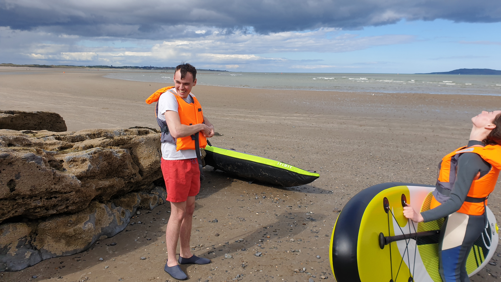
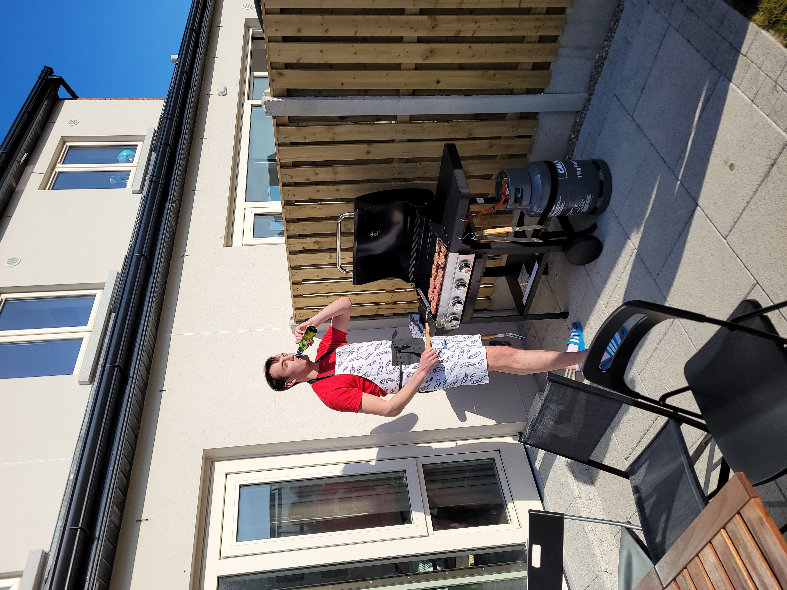

Daniel's Story
Daniel was a light in this world—a young man whose kindness, intelligence, and quiet strength touched everyone who had the privilege of knowing him. Born in January 1997 to Aidan and Marie, Daniel came into the world as a beloved firstborn, later joined by his three younger siblings, Orla, Conor, and Aoife. From the very beginning, family was everything to Daniel, and he adored them with his whole heart.
Growing up in Portmornock, Daniel attended local schools where his natural curiosity and sharp mind began to shine. He went on to University College Dublin to study Actuarial Science, a field that perfectly suited his brilliant, analytical mind. But Daniel was more than just grades and awards—though he won many of those too. He was a loyal friend, a deep thinker, and someone who found joy in both intellectual challenges and simple moments with the people he loved. Alongside his closest friends from school, especially Jamie and Gavin, Daniel graduated from UCD in 2019, surrounded by pride and celebration.
When he wasn't studying, Daniel could be found doing the things he loved best: a thoughtful game of chess, a competitive hand of poker, or lacing up his running shoes to explore the trails. He found peace in nature, whether hiking through the hills, paddling a kayak across calm waters, or running through the familiar paths of Malahide Castle. These were the moments that filled his spirit.
After university, Daniel stepped into his dream job as a Quantitative Trader at Susquehanna International Group. He thrived there—not just because of his remarkable talent, but because he finally found a place where his passion and purpose met. He loved the work, the people, and the sense of belonging he felt every day.
But of all the accomplishments in Daniel's life, none meant more to him than the love he shared with his partner, Hollie. They met during his first year of college in 2015, and from that moment, they were inseparable. They weren't just partners—they were true best friends, building a life filled with laughter, quiet mornings, and dreams for the future. In December 2021, they moved into their first home together, a milestone that marked the beginning of everything they had hoped for.
On Sunday, June 12th, 2022, Daniel went for a run at Malahide Castle, one of his favorite places. Near the cricket ground, he suffered a cardiac arrest. Despite the heroic efforts of strangers who stopped to help, the swift arrival of emergency services, and the prayers of everyone who loved him, Daniel passed away. The world lost a beautiful soul that day, but heaven gained an angel.
We are heartbroken—there is no other word for it. Daniel was larger than life: a big personality with a quick wit, a gentle nature, and an endless capacity to love. He had a way of making people feel seen, heard, and valued. His future was impossibly bright, and losing him has left a hole that can never be filled. But we carry him with us—in every laugh we share, every sunset we watch, every quiet moment we remember.
The Mater Hospital Foundation does incredible work screening for heart conditions and has been a source of support and comfort for our family. If you would like to honor Daniel's memory, please consider learning more about their mission or making a donation.
Support The Mater Hospital FoundationCRY Ireland (Cardiac Risk in the Young) is another amazing charity that supports families affected by sudden cardiac death and cardiac illness. They have helped us navigate this unimaginable loss, and we are forever grateful.
Support CRY IrelandDaniel loved music with an eclectic taste that reflected his beautiful, complex spirit. If you'd like to listen to some of the songs that moved him, you can follow his Spotify playlist.
Listen to Daniel's Spotify
